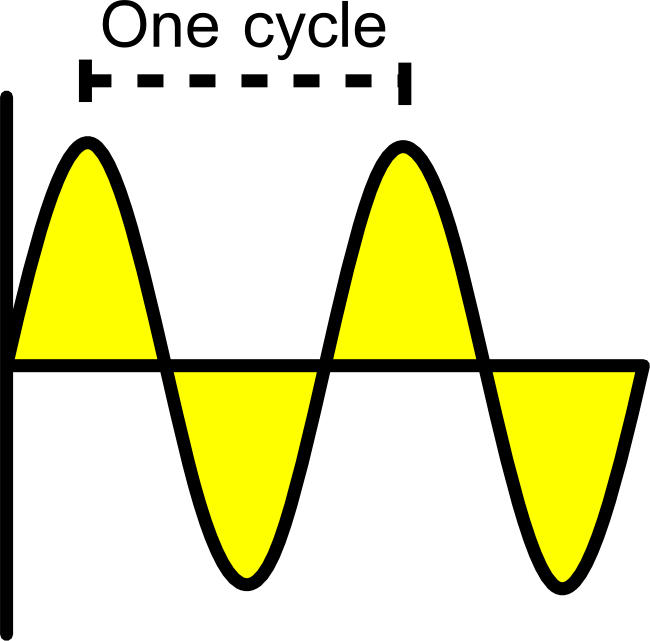

Amateur Radio Technician License
Joshua Tolley
Electrical Principles
Voltage:
the force that moves electricity, or
electromotive force
. Measured in
volts (V or E)
.
Mobile transceivers
use about 12 volts.
Current:
the amount of electricity flowing.
Measured in
amperes (A)
.
Resistance:
opposition to electrical flow
Measured in
ohms (Ω)
.
Some materials have high resistance, and some
have low resistance.
Copper is a good
conductor
because it has low resistance
Glass and plastic are
insulators
, because they have high resistance
In some cases, current flows only in one
direction. This is
Direct Current
.
Other times, current changes direction. This is
called
Alternating Current
.
Frequency
describes how often the current
changes direction. It is measured in
hertz (Hz)
.
One hertz is one cycle per second.

Voltage, current, and resistance are related
through
Ohm's law
Voltage = Current x Resistance
With some algebra: